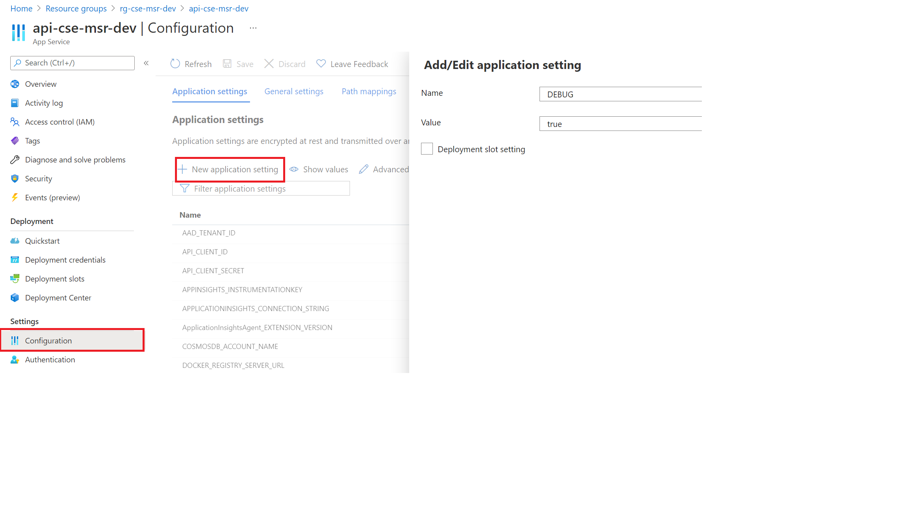
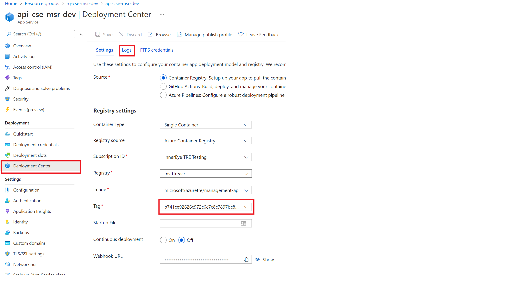
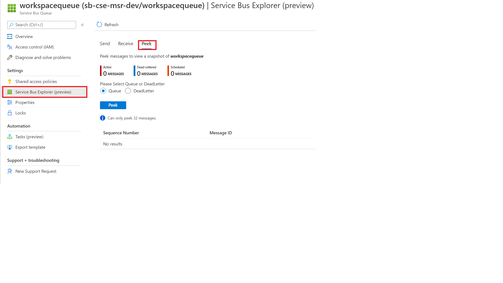
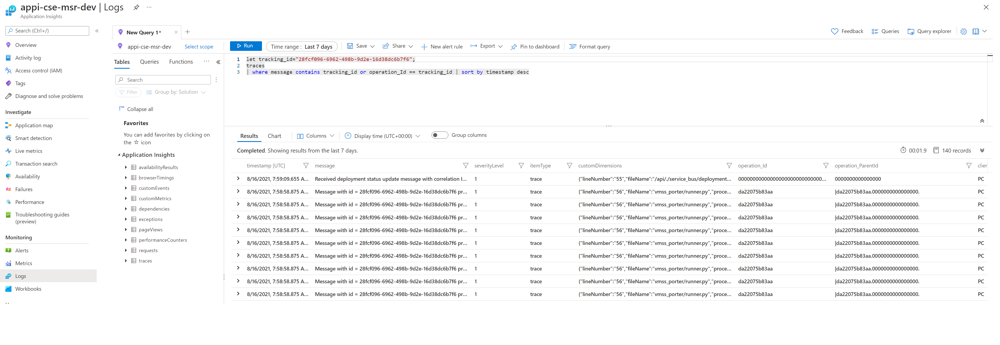
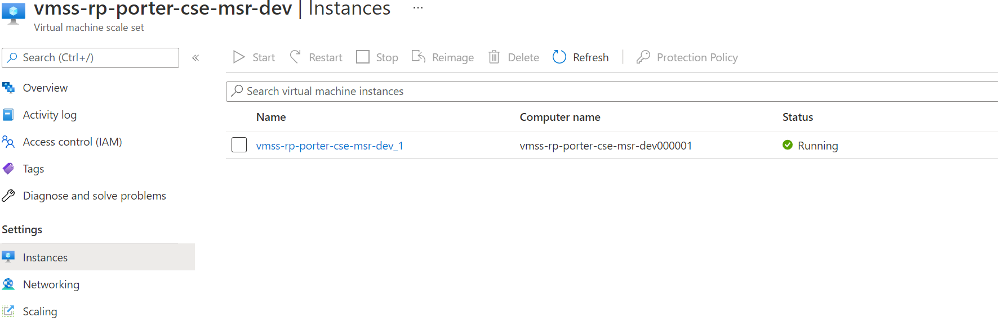
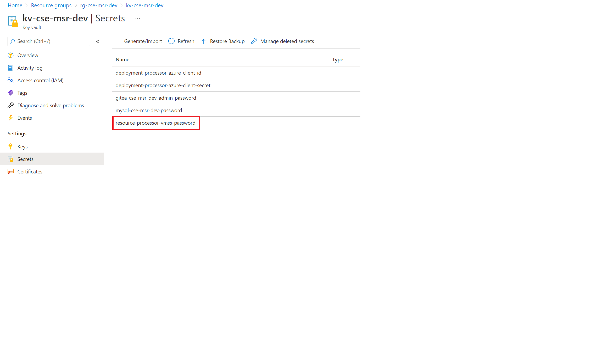
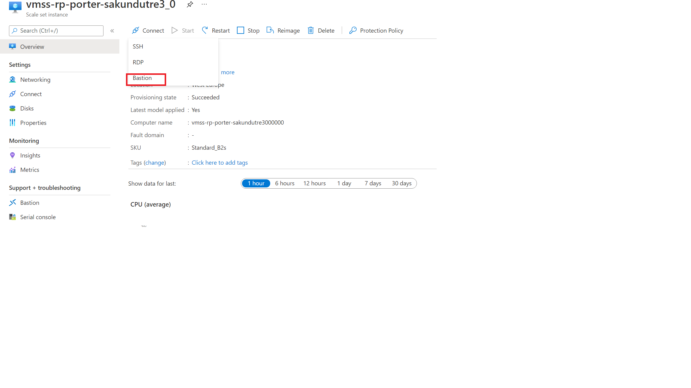

Operations Debugging and Troubleshooting guide
This guide explains how to go about finding the root cause of why a workspace resource might not have been deployed.
The steps listed below should be followed in order as that is how the message also flows in the system.
Enabling DEBUG mode on the API
The API is by default configured to not show detailed error messages and stack trace when an error occurs. This is done to prevent leaking internal state to the outside world and to minimize information which an attacker could use against the deployed instance.
However, you can enable DEBUG=true in the configuration settings of the API using Azure portal.
- Go to App Service for the API and select Settings > Configuration.
- Click New Application Setting.
- in the new dialog box set Name = DEBUG and Value = true

With DEBUG mode enabled when an error occurs at the API level it will display a detailed error message which should help in understanding why the payload was not accepted.
API logs using deployment center
You should also check that the version you are debugging/troubleshooting is the actual one deployed on the App Service. This can be checked using Deployment Center. You can also follow the logs as generated by the container in the logs tabs.

Checking the Service Bus
If the message payload is accepted by the API and a workspace_id is generated you should be able to track the progress of the deployment using GET /api/workspaces/{workspace_id}
To start with the status is always reported as
"deployment": {
"status": "not_deployed",
"message": "This resource has not yet been deployed"
}
which should eventually change as the message flows through the system. If the message remains at this stage you should first verify that the message arrived in the service bus. This is most easily done on the Azure portal.
- Select the Service Bus from deployed resources and click Entities > Queues > workspacequeue.
- Select the Service Bus Explorer and the Peek tab to check for hanging messages.

Checking the logs in App Insights
Every component of TRE should send their trace logs to App Insights logging backend, and you should be able to see the process flow by using a suitable query. Traces however take time to appear so be patient. Go to the deployed app insights instance and select Monitoring > Logs where you can run the following example query to get the logs for a specific deployment.
let tracking_id="<workspace_id>";
traces
| where message contains tracking_id or operation_Id == tracking_id | sort by timestamp desc

For a successful deployment you should see the last message (at the top since the order is timestamp descending) something like
Received deployment status update message with correlation ID 28fcf096-6962-498b-9d2e-16d38dc6b7f6: {'id': '28fcf096-6962-498b-9d2e-16d38dc6b7f6', 'status': 'deployed', 'message': 'cse-msr-dev-b7f6: Workspace was deployed successfully...'}
It should also be evident from the message flow where the current processing is stuck or failed. Failed deployment status should also be available in the GET /api/workspaces/{workspace_id} and this is just another way to confirm it.
Checking the Virtual Machine Scale Set(VMSS) instance running resource processor
If you see messages hanging in the service bus queue then the resource processor is not up and running. Verify that the VMSS instance is up and healthy.

The processor runs in a vnet, and you cannot connect to it directly. If the instance is up then you need to connect to the instance using Bastion. Bastion is already deployed, and you can use the username adminuser and the password is stored in the keyvault under the secret resource-processor-vmss-password
Info
You cannot see secrets unless you are added to a suitable Access Policy for the keyvault.


After logging in you should check the status of cloud-init which is used to bootstrap the machine with docker and start the processor. Log files for cloud init are
- /var/log/cloud-init.log
- /var/log/cloud-init-output.log
If the docker container is pulled as shown in logs then the resource processor should start.
You can check the status of the container using docker ps
However, if you see nothing (and the container was pulled) then the processor has either not started yet or it has crashed. You can check all docker processes using docker ps -awhich should show if the container terminated before. You can get the logs from container using docker logs <container_id> command.
If you want to start a processor container manually you can use the following command and execute from root(/) of filesystem.
docker run -v /var/run/docker.sock:/var/run/docker.sock --env-file .env --name resource_processor_vmss_porter_debug runner_image:tag
runner_image:tag can be obtained using docker ps
Info
All logs which you see from the resource processor should also be transferred to the App Insights instance as noted above, so it is not essential to follow the progress by logging into the instance. Logging into the instance and starting a container manually is helpful in live debugging.
Updating the running container
If you start a container manually you will probably want to install software, for example, an editor. However, firewall blocks all ingress traffic, so you cannot run sudo apt update. You need to add an override rule in the firewall to allow the traffic. Remember to remove this rule when debugging is done.